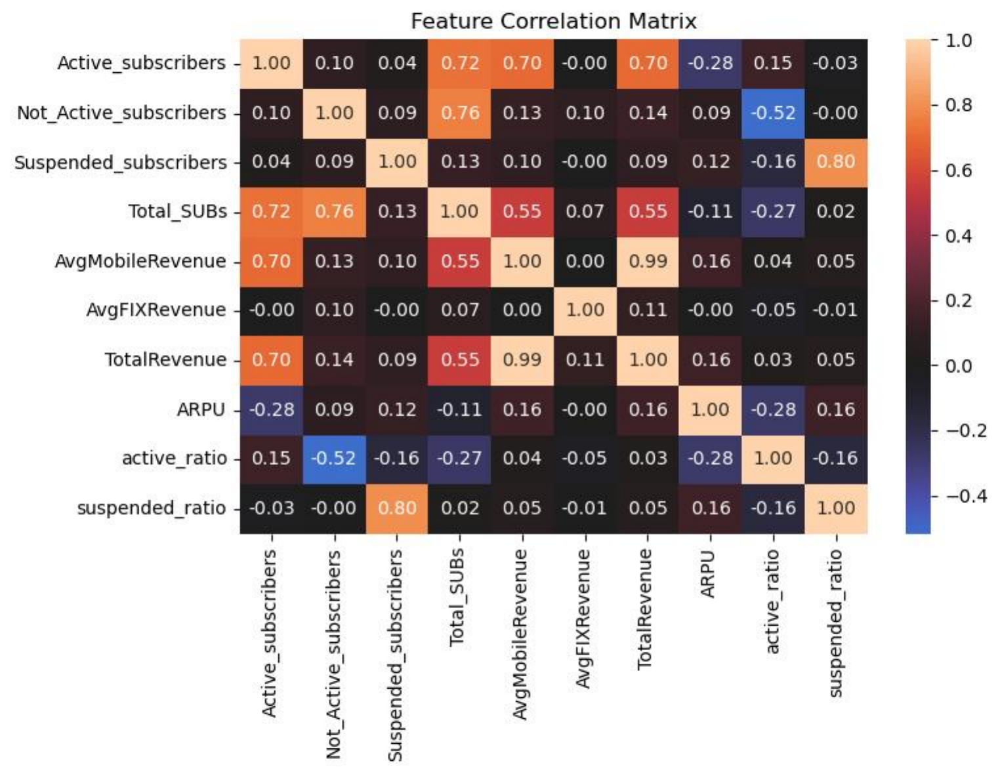

About
Hi, I’m Thanh Nguyen, and I go by Ethan. I took the name from Ethan Hunt in Mission: Impossible, a character I’ve always admired for his persistence, calm under pressure, and refusal to give up. It reminds me of who I want to be.
I work across data analytics and economic research. My experience spans operational and customer analytics at PSECU, business analysis in banking, and independent research on financial markets, regulation, and monetary policy.
Experience
A journey where I learned how to turn business questions into practical data solutions and communicate well across environments.
Pennsylvania State Employees Credit Union Data Analyst Intern
June 2024 — Present- Analyzed 54,000 loan closures in SQL to identify a system error causing high-volume processing delays.
- Automated HR Onsite Adherence Dashboard using Power BI and SQL with dimensional modeling to process 200,000+ badge swipes, cutting review time by 80%.
- Built Net Promoter Score Dashboard in Power BI providing MTD/QTD/YTD and sentiment context insights to support leadership KPI reviews.
- Extracted member interaction data, engineered call-intent features in SQL and developed a Python ML model to predict call volume, reducing customer wait time 18%.
- Analyzed 54,000 loan closures in SQL to identify a system error causing high-volume processing delays.
- Automated HR Onsite Adherence Dashboard using Power BI and SQL with dimensional modeling to process 200,000+ badge swipes, cutting review time by 80%.
- Built Net Promoter Score Dashboard in Power BI providing MTD/QTD/YTD and sentiment context insights to support leadership KPI reviews.
- Created Data Validation Report to flag recurring data quality issues, improving daily review time by 30%.
- Developed User Entering Time Report to track monthly timecard submission rates, helping managers monitor time-entry performance.
- Analyzed SSRS report usage using Excel pivot analysis to identify unused reports in H1 2024 for the Enterprise Project Management Office inventory, improving reporting efficiency.
- Tracked Insight Portal usage using Power BI across C-suite, AVP, and VP groups to support adoption review.
- Validated 400+ staging tables using SQL and Excel benchmarking to ensure 100% data consistency across Azure and on-premise databases.
- Leveraged Microsoft Copilot to create Python install scripts and deployed secure Python .whl package workflows for 30+ analysts, cutting new-hire technical onboarding time by 70%.
- Leveraged Copilot to create a Python automation that scanned CRAN package URLs and generated a version inventory, streamlining R package maintenance.
- Extracted member interaction data, engineered call-intent features in SQL, and developed a Python ML model to predict call volume, reducing customer wait time 18%.
- Tested Microsoft Fabric AutoML, Power BI Copilot, and Graph Analytics semantic models through ad hoc research to evaluate their fit for operational workflows and future enterprise adoption.

TechX Corp. Business Analyst Intern
May 2023 — Aug 2023- Performed Customer Lifetime Value analysis to segment customer profiles and design targeted loan product recommendations, supporting 10% market penetration growth for HD Bank.
- Designed 9 entity-relationship diagrams using Visio from the client’s canonical data model to standardize member, account, and transaction definitions across teams.
Gettysburg College Mathematics Department Calc-Aid Peer Learning Associate
Jan 2024 — May 2024Provided weekly office hours to support students in Calculus and other 100-level quantitative courses.
Gettysburg College Admissions International Student Ambassador
Jan 2023 — May 2024Represented the college through online panels and recruitment initiatives for prospective international students.
Projects
A mix of selected technical and research work applied to real business and market questions.
Data Analytics
Telecom Customer Churn Prediction
April 2025Developed a machine learning model using Scikit-learn to analyze and predict whether a customer is likely to leave.

U.S. Counties Air Pollution Analysis
April 2024Visualized regional air quality trends across U.S. counties to show regional pollution hotspots.

Trucks Accident Risk Analysis
Dec 2023Analyzed accident data to identify primary causes and provide safety-focused business insights.

Finance & Econometrics
Pay Transparency & Wage Dispersion
May 2026Built a two-worker Nash bargaining model showing how pay transparency can compress within-firm wage gaps while creating a trade-off with average wage levels.
Volatility and Risk in U.S. Retail Stocks
Dec 2025Analyzed retailer stock returns and volatility using ARCH/GARCH and DCC-GARCH models to show that diversification gets weaker during market stress.

Durbin Amendment & Bank Deposit Fees
Nov 2025Applied regression discontinuity at the $10 billion asset cutoff to test whether banks passed regulatory costs to customers.

Monetary Policy Impact on Oil Prices
Dec 2024Studied how U.S. interest rates and oil prices moved together during the pandemic under supply-side stress.

Leadership
These experiences taught me ownership, humility, and the importance of having a mission beyond myself.
The Penwings Foundation
Jan 2017I co-founded The Penwings Foundation with neighbors to support one of the most vulnerable communities in Vietnam: children from ethnic minority groups in remote mountainous areas, where many basic living needs are still difficult to access. We built our mission around two life-changing needs: education and health. With guidance from IEG Foundation, we helped bring learning opportunities to children in remote communities while supporting families facing critical hospital expenses.
Through this work, we raised $65,000 to build two elementary schools, provide essential school and living resources, and fund multiple heart surgeries and hospital expenses for children in rural Vietnam.


Movies for Relief
Sep 2019 — Sep 2021Movies for Relief is one of the first and largest high school organizations in Hanoi to turn student filmmaking into a charity movement. It creates a space where students can write, act, produce films, and share their creativity through student-led events guided by professionals in the creative field. The mission goes beyond the stage. Through ticket sales, handmade goods, props, and fundraising events, we raised money to support children without parental care through SOS Children’s Villages.
As Head of Finance, I managed an 11-student team, tracked budgets and revenue, coordinated sponsor negotiations, and helped support events with up to 3,000 attendees.